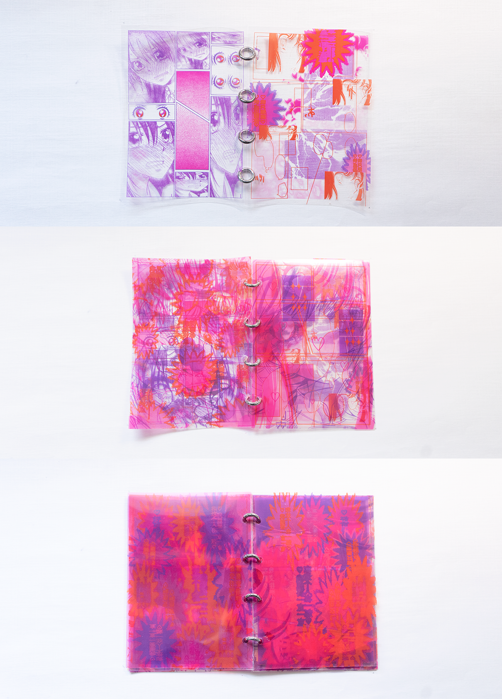
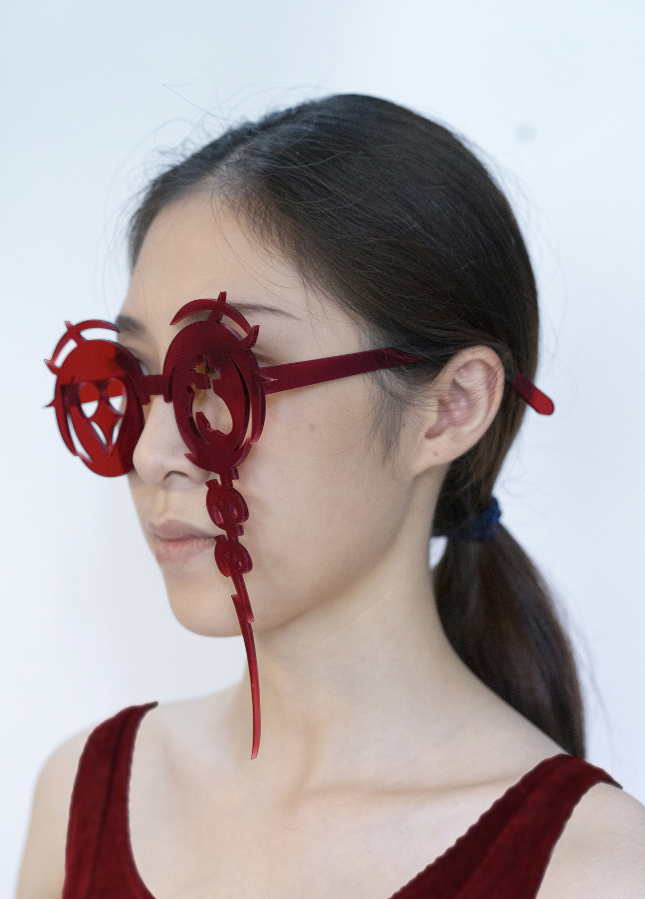

I Need To Be Loved!
Shojo comics use the image of the love-addicted girl to regulate female readers and prevent them from finding their own value. This sub-culture is a part of social regulation. And it is often overlooked by people. So I think it is necessary to make female readers know the wrong perceptions in shojo comics.
I deconstructed the elements of the shojo comic and designed the “lost typeface" to make people feel the extremes and insanity of love addiction in shojo comic.
Please open in larger screen for better project description